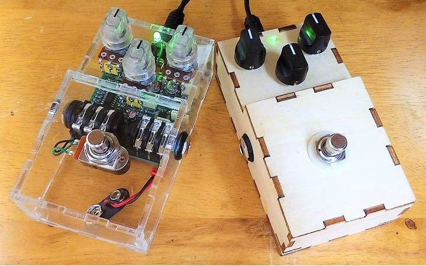
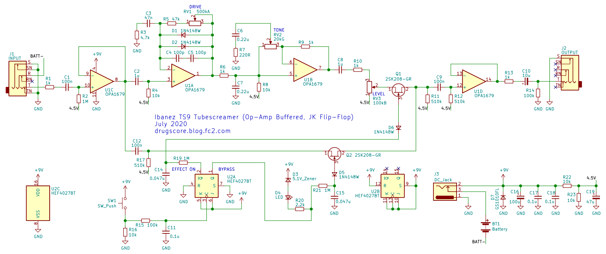
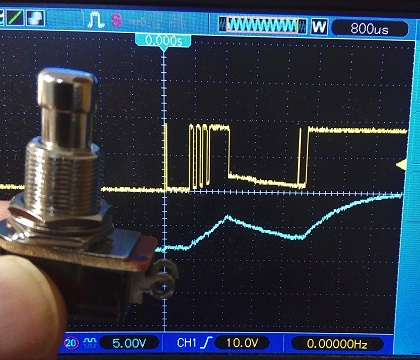
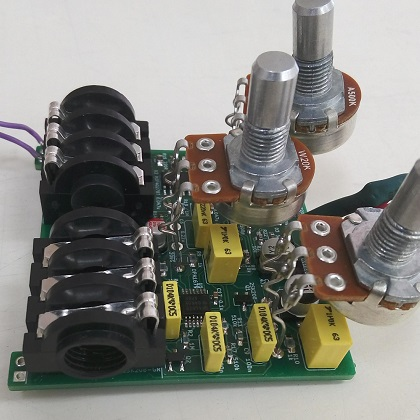
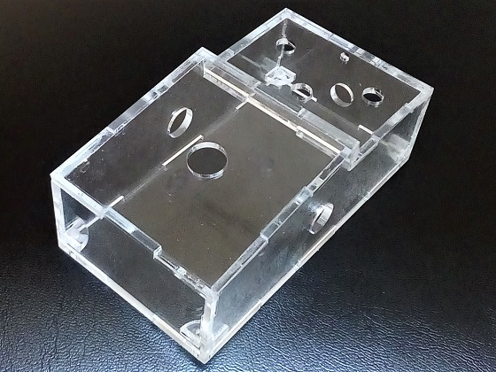
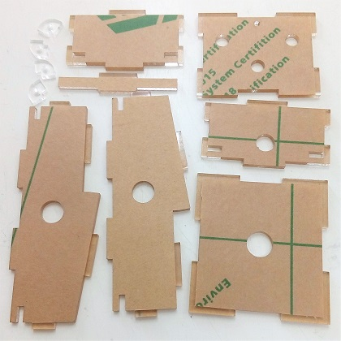

Ibanez TS9 TUBE SCREAMER アクリル製ケース & 木製ケース
2020年09月21日 カテゴリー：自作エフェクター（アナログ）

Elecrowのレーザーカットサービスでは、アクリルや木材等の高精度な加工を依頼できます。このサービスを利用してエフェクターの筐体を設計すると面白そうだと思いやってみました。単純な箱型ではなくフットスイッチ部分を傾けた形にすることにして、中身は安直にチューブスクリーマーを選びました。
※加工の注文等に関しては別記事へ
▽回路図（KiCadデータはGitHubへ）

以前製作したDS-1と同様に、クワッドオペアンプとロジックIC仕様です。TS9でもTS808でもない感がありますが気にしないことにします。
今回Daier ElectronというメーカーのSPSTフットスイッチを使ったのですが、約4msに渡ってチャタリングが起こることがあるようです（下写真の黄色参照）。誤動作防止のため、DS-1の時より大きめの値のチャタリング防止回路へ変更しています。

▽内部写真

コンデンサは手持ち分を消費したかったのでスルーホールタイプです。トーンポットはGarrettaudioにあるGカ－ブ類似品の20kWを使いました。フォンジャックはDaier Electron製です（組み立てやすいようにねじ部をカッターで少し削っています）。
▽ケースについて
フットスイッチ部分は8度の傾斜で、内部寸法はHAMMOND1590Bとほぼ同じとしました。アクリルだけでもよかったのですが、木材も同じ図面データを使い回せるのでついでに注文しました。一応2台の音を聞き比べてみましたが、特に違いは感じられませんでした。
木製ケースは単純にボンドで接着するだけなのですが、アクリル製ケースは汚れ等が目立つので組み立てに気を使います。最初の設計では嚙み合わせ部分の隙間がやや大きかったので、隙間を詰めてねじ穴パーツ取り付け位置を変えたバージョンも作りました（左下写真、図面データはGitHubへ）。

組み立て時には右上写真のように「のりしろ」部分のみ保護シールをはがしました（棒状パーツの両端をはがし忘れています…）。アクリル樹脂専用接着剤ABN-1というものを使いましたが、付属のスポイトは量の調節が難しいです。案の定アクリル保護シールに接着剤が大量に染み込み、表面がザラザラになってしまいました。どうやら必ず注射器を使う必要があるようです。